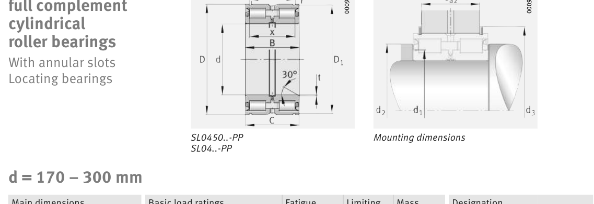

Original catalogue drawing - FAG Schaeffler HR 1, page 552

Scanned from the manufacturer catalogue page listing this part number. All part numbers printed on that table share the same drawing.
Scale cross-section
Blue = inner / outer ring, yellow = rolling element. Drawn to scale from this part's own
dimensions for selection reference only - not a manufacturing or assembly drawing.
Dimension table (mm / inch)
Symbol
Dimension
mm
inch
d
Bore diameter
240
9.4488
D
Outside diameter
320
12.5984
B
Inner-ring / bearing width
95
3.7402
C
Cup / outer-ring width
94
3.7008
r
Chamfer (min)
1
0.0394
Notes
Weights are given in kg. Load ratings are shown in both the original catalogue units and the converted value (1 N = 0.2248 lbf). Data is provided for selection reference only - confirm against the latest official catalogue before ordering.
Main dimensions
Bore d (mm)
240
Outside dia. D (mm)
320
Width B (mm)
95
Cup width C (mm)
94
Inner-ring OD d1 (mm)
272
Inner-ring shoulder dia. D1 (mm)
314
Load ratings & speeds
Basic dynamic load rating Cr (lbs)
166359
Basic static load rating Cor (lbs)
382175
Basic dynamic load rating Cr (N)
740000
Basic static load rating C0r (N)
1.7e+06
Fatigue limit load Cur (N)
195000
Limiting speed nG (rpm)
560
Weight
Weight (kg)
6.3
Mounting dimensions (fillets / shoulders)
Housing fillet r max (mm)
1
Bearing life (ISO 281 basic rating life)
C / P
Equivalent load P (N)
L10 (106 rev)
L10h at 100 rpm
4
185,000
102
16,932
6
123,333
392
65,416
8
92,500
1,024
170,667
10
74,000
2,154
359,072
15
49,333
8,323
1,387,244
Basic rating life per ISO 281: L10 = (C/P)10/3 with C = 740,000 N. Hours = L10 x 106 / (60n). Life-modification factors for lubrication, contamination and temperature (aISO) are not included.
Source & traceability
Brand
FAG
Source catalogue
FAG / Schaeffler Rolling Bearings HR 1
Catalogue page
p.552 (dimensions)
Load ratings in newtons, fatigue limit load Cur, limiting speed nG and reference speed nB.
Send us the quantity you need and we will come back with price and
lead time, normally within 24 hours. Equivalent parts from other brands can be quoted at the same time.